큐레이터 링크를 쓰레드와 인스타그램에 올려요
영상은 여섯 가지 부업을 차례로 소개하고, 그중 카카오톡 선물하기 큐레이터를 첫손에 꼽아요. 이유는 하나예요. 지금 오픈 프로모션으로 수수료 9%를 주고 있어서요. 여섯 가지를 먼저 한눈에 놓고 보면 이래요.
| 부업 | 돈이 들어오는 길 | 영상이 꼽는 장점 |
|---|---|---|
| 카카오톡 큐레이터 | 링크로 팔린 금액의 수수료 | 스마트폰 하나로 바로 시작해요 |
| 인스타그램 캐러셀 | 조회수 수익, 제휴 링크 수수료 | 카드 뉴스와 AI(Artificial Intelligence) 설명글이면 돼요 |
| 위즈패널 | 설문마다 포인트 | 클릭만 하면 끝나요 |
| 블로그 | 광고 수익, 체험단 협찬, 제휴 링크 수수료 | 세 갈래로 수익을 낼 수 있어요 |
| 당근 위탁 판매 | 판매가와 도매가의 차이 | 재고, 포장, 배송 부담이 없어요 |
| 쇼핑 쇼츠 | 제휴 링크 수수료 | 얼굴과 목소리를 안 내도 돼요 |
표를 보면 네 가지가 같은 구조를 공유해요. 영상이 부업마다 따로 설명하지만, 묶어 보면 링크 하나를 어디에 올리느냐의 차이예요.
큐레이터가 뭔지부터
큐레이터는 제휴 마케팅을 선물하기 안에서 하는 거예요. 왼쪽의 선물 세트에 전용 링크를 만들면, 오른쪽 사람들이 그 링크로 살 때마다 수수료가 쌓여요. 화면의 39,000원 상품과 +3,200원은 구조를 보여 주려는 예시예요.
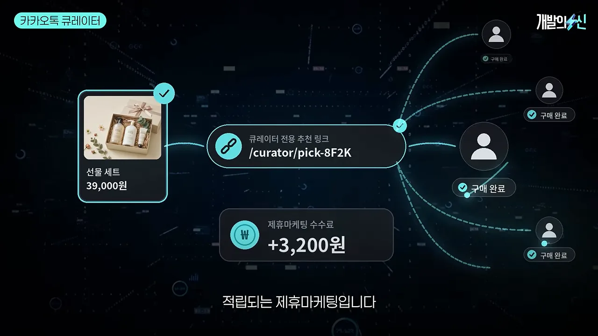
신청하고 링크 만들기
카카오톡 선물하기에서 오른쪽 아래 선물함을 눌러요. 위쪽 아이콘 줄에 받은 선물, 쿠폰, 큐레이터, 쇼핑포인트가 나란히 있어요. 파란 큐레이터 아이콘이 입구예요.
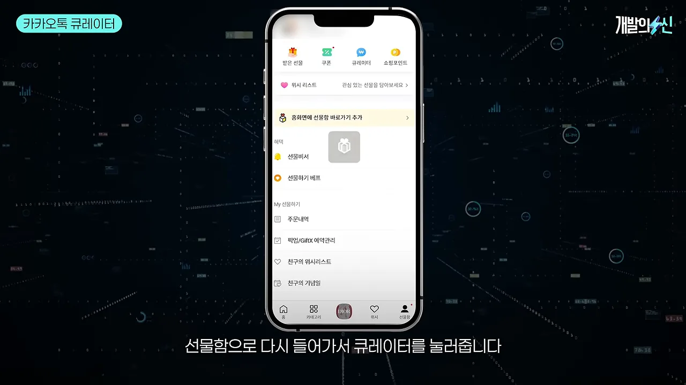
들어가면 '상품 링크를 공유하고 9% 수익을 받아보세요'라고 적힌 안내가 떠요. 아래쪽 노란 버튼이 큐레이터 신청이에요. 누르고 정보를 넣으면 신청이 끝나요. 화면의 아이콘들은 링크를 공유할 수 있는 SNS(Social Networking Service)예요.
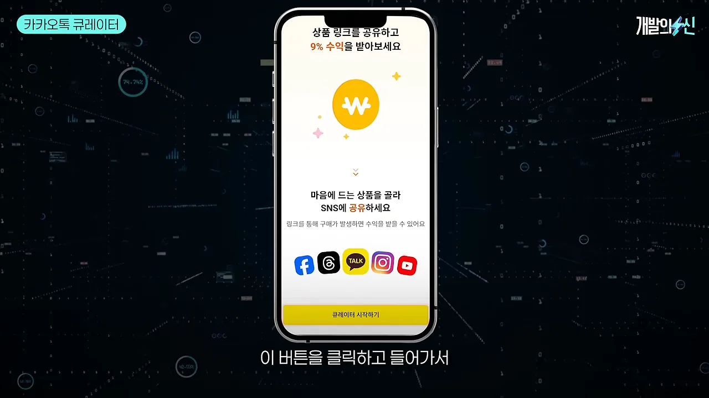
신청이 끝나고 큐레이터로 다시 들어가면 상품 목록이 달라져요. 빨간 네모 친 칸처럼 상품 아래에 링크 생성 버튼이 생겨요. 누르면 제휴 링크가 복사돼요.
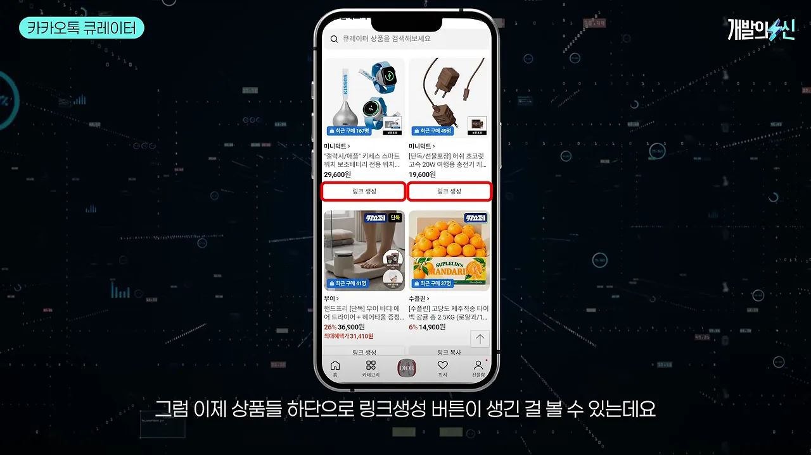
쓰레드에 올리기
영상이 링크 올릴 곳으로 처음 꼽는 곳은 쓰레드예요. 요즘 글 노출과 도달률이 가장 높다고 봐서요. 예시는 한 줄 글에 사진 한 장이 전부예요. 본문은 '친구 생일 선물로 주기 좋은 3만 원대 가성비 선물 추천!'이고, 아래 답글 칸에 링크를 넣었어요. 링크 위에는 수수료를 받는다는 문구도 함께 적었어요.
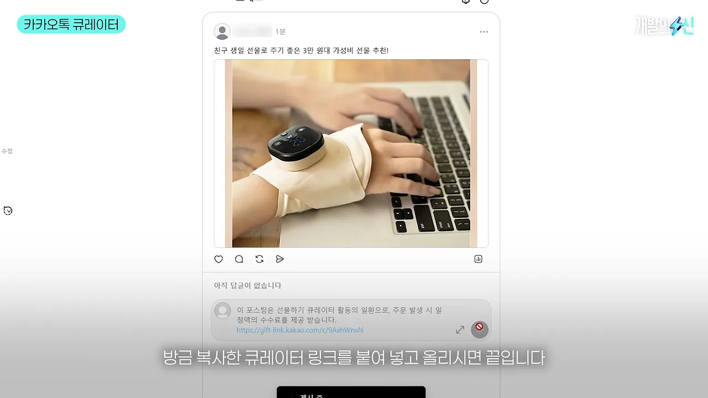
인스타그램 캐러셀로 올리기
캐러셀은 같은 링크를 카드 뉴스로 보내는 방법이에요. 조회수로도 벌 수 있다고 하지만, 영상의 시연은 제휴 링크 쪽이에요. 2~3만 원대 집들이 선물처럼 테마를 잡고 인기 상품을 세 개쯤 고른 뒤 미리캔버스로 넘어가요. 상품 사진 위에 제목만 얹어요. 시연의 제목은 '3만 원대 센스 있는 생일 선물'이에요.
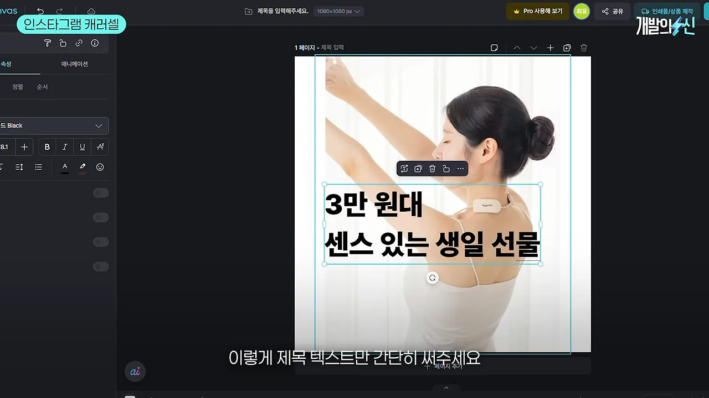
설명글은 AI에게 맡겨요. 시연 화면은 Gemini 입력창에 큐레이터 링크를 붙여 넣는 장면이에요. 영상은 ChatGPT나 Gemini 아무거나 괜찮다고 해요.
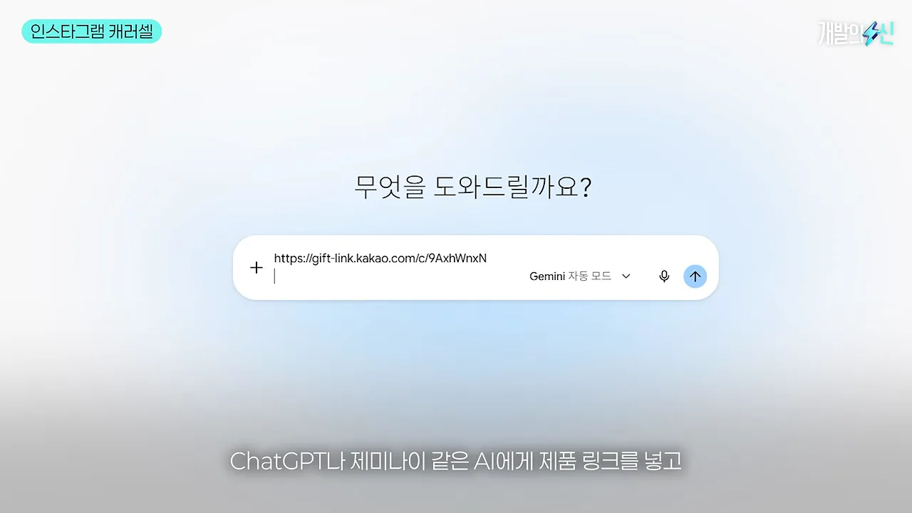
오른쪽 위가 요청이고, 아래가 AI의 답이에요. 답은 '손목 아픈 분들 필수 소장템'으로 시작해서 '프로필 링크 click'과 해시태그로 끝나요. 중간에 '실제 물리치료사도 매일 쓴다는'이라는 문장도 있어요. 영상은 복사해서 그대로 붙이라고 하는데요, 이런 문장은 근거가 있는지 확인하고 올리는 게 좋아요.
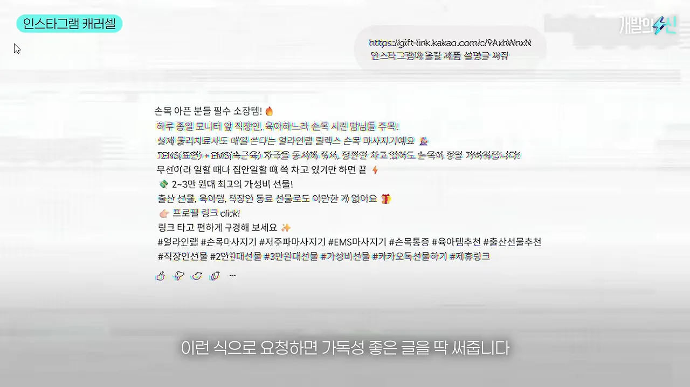
인스타그램에 카드 뉴스를 올리고 설명글을 붙여요. 마지막에 '프로필 링크에서 바로 구매 가능해요'라고 남기면 끝이에요. 사는 사람은 프로필의 링크로 들어가요.
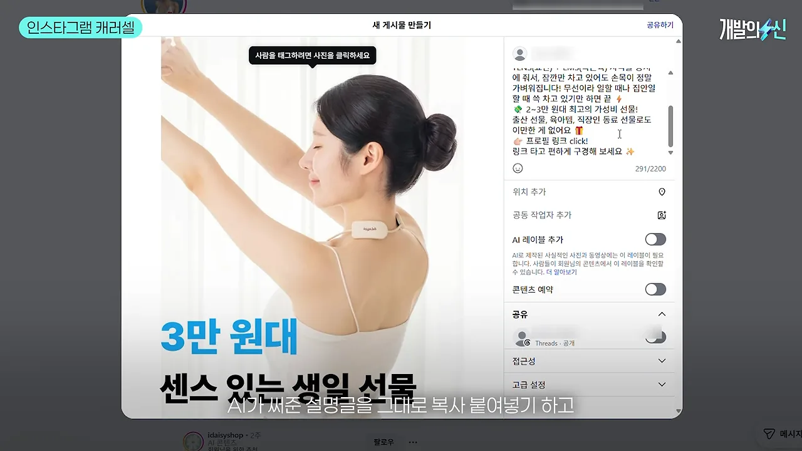
큐레이터만 고집할 필요는 없어요. 영상은 수수료 때문에 큐레이터를 예로 들었을 뿐이고, 제품에 따라 쿠팡 파트너스, 토스 쉐어링크, 네이버 제휴 링크를 섞으라고 해요. 화면에서 헤드폰, 향수, 캔들 아래 세 플랫폼이 놓인 게 그 뜻이에요.
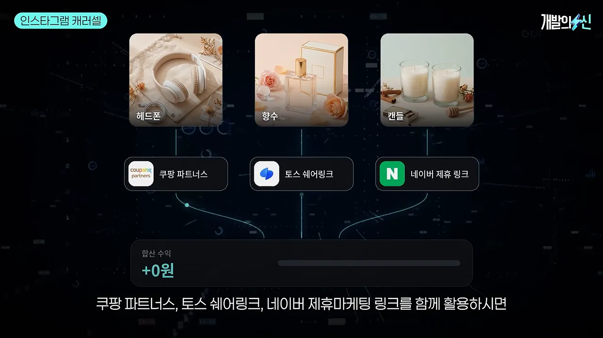
위즈패널은 설문으로 포인트를 받아요
위즈패널은 링크도, 글도 필요 없는 부업이에요. 사이트에 로그인해서 진행 중인 설문에 들어가요. 화면에는 설문 카드가 놓여 있고, 가운데 'Welcome Survey (1차)'가 100P, 오른쪽 '(2차)'가 50P예요. 둘 다 약 2분 걸린다고 적혀 있어요.
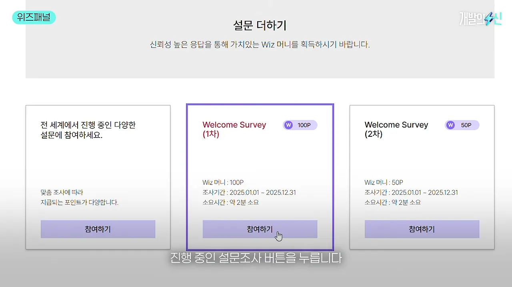
객관식 항목을 누르고 연령대나 거주지를 고르면 끝이에요. 설문을 마치면 화면 가운데 숫자로 받은 포인트가 떠요. 시연에서는 100P가 바로 들어왔어요.
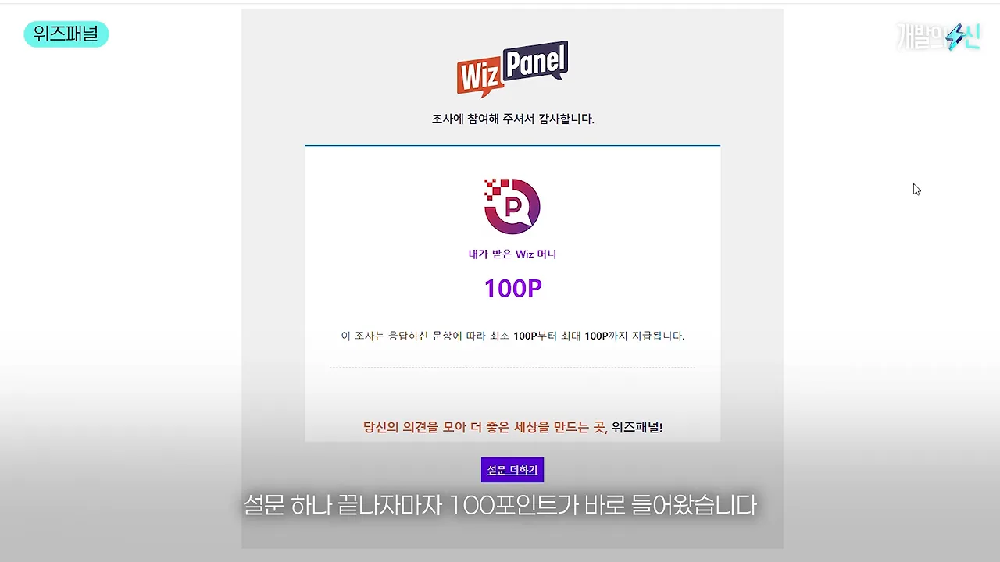
영상은 이걸로 커피값, 밥값을 벌 수 있다고 말해요. 하지만 설문이 얼마나 자주 오는지, 한 달에 얼마나 모이는지는 다루지 않아요. 그래서 커피값, 밥값은 영상의 표현으로만 봐 두면 돼요.
블로그는 애드포스트만 보면 지쳐요
블로그 하면 보통 애드포스트를 떠올려요. 영상은 애드포스트만 노리면 하루 몇백 원 수준이라 금방 지친다고 해요. 그래서 돈이 되는 방식을 세 가지로 나눠요.
첫째, 네이버 홈판에 실리기
첫 번째는 애드포스트를 버리는 게 아니라 키우는 방법이에요. 리빙, 푸드, 패션 같은 네이버 홈판에 실릴 만한 정보성 글을 써요. 화면에서 '내 글' 표시가 붙은 왼쪽 카드가 그런 글이고, 오른쪽 그래프는 방문자가 오늘 치솟는 모습이에요.
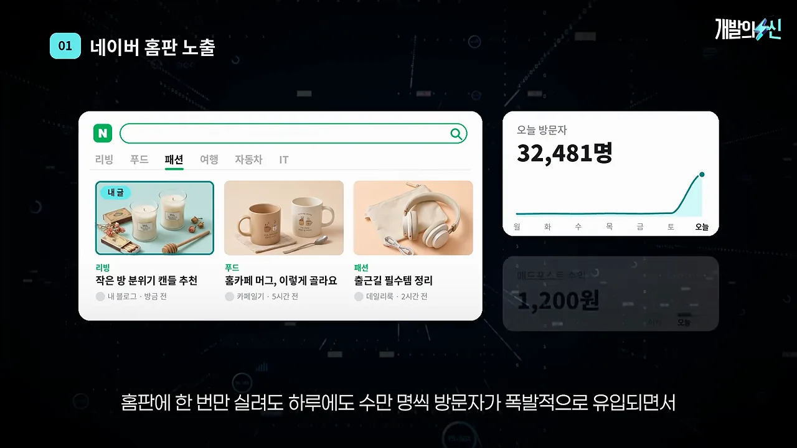
둘째, 체험단으로 생활비 아끼기
두 번째는 돈이 들어오는 게 아니라 나갈 돈이 줄어드는 방식이에요. 화면의 네 카드가 맛집, 미용실, 가전제품, 화장품이고, 원래 가격에 줄을 긋고 0원으로 적었어요. 영상은 이렇게 해서 매달 수십만 원 이상을 아낀다고 해요.
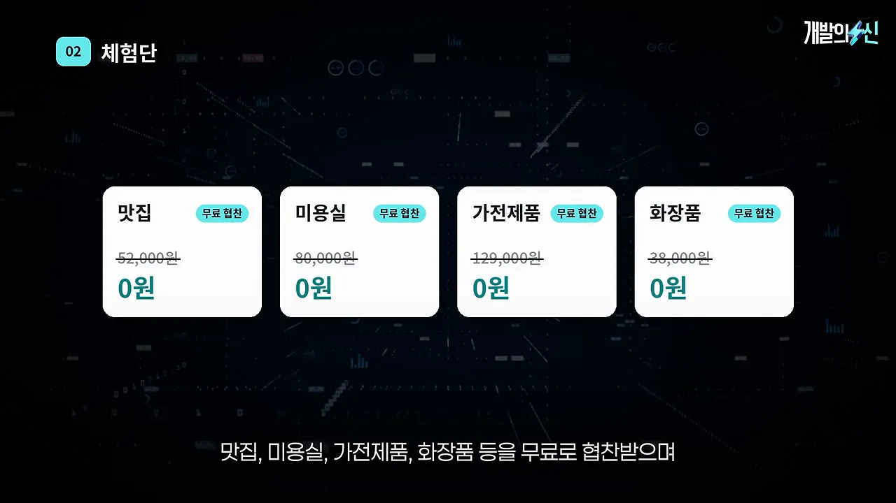
셋째, 글 아래에 제휴 링크 달기
세 번째는 앞에서 본 그 구조예요. 왼쪽 글 '요즘 매일 쓰는 물건 3가지'에 상품 카드 세 개가 있고, 각각 네이버, 카카오, 쿠팡 링크가 달려 있어요. 오른쪽은 그렇게 들어온 수수료 내역 예시예요. 영상은 네이버 블로그에 가장 잘 맞는 프로그램으로 네이버 쇼핑 커넥트를 꼽아요.
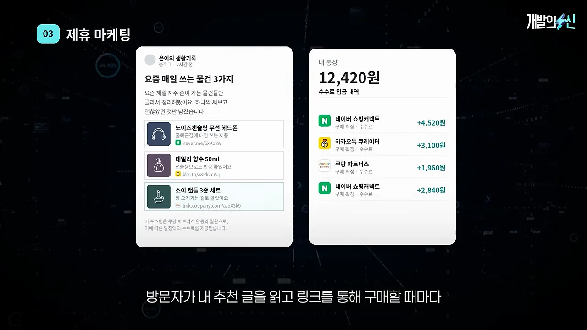
이 세 가지의 걸림돌은 글쓰기라고 해요. 주제와 키워드를 정하지 못해서 글 하나에 2~3시간씩 걸리고, 그러다 멈춘다는 거예요.
당근 위탁 판매는 재고 없이 새 상품을 팔아요
블로그 수익이 쌓이길 기다리기 싫다면 이 방법이라고 영상은 말해요. 당근 하면 쓰던 물건을 동네에서 직거래하는 곳을 떠올리지만, 새 상품을 택배로 파는 방법을 소개해요. 위탁 판매예요.
주문부터 배송까지
전체 흐름은 세 사람 사이의 일이에요. 영상의 예시 숫자를 넣어 한 장으로 그리면 이래요.
먼저 도매 사이트를 찾아요. 영상은 도매꾹을 예로 들고, 다른 B2B(Business to Business) 도매 사이트도 괜찮다고 해요. 구글에서 '도매꾹'을 검색한 화면이에요. 여기서 주부나 직장인이 좋아할 가성비 리빙 용품을 골라요.
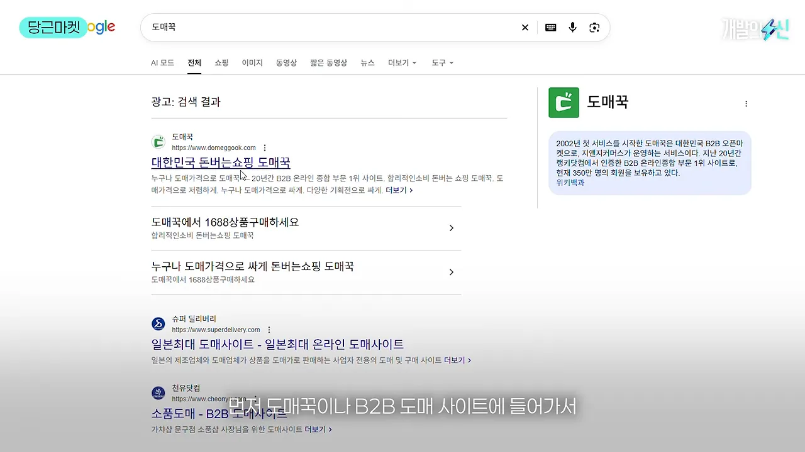
다음은 당근 앱의 내 물건 팔기예요. 도매 사이트의 상품 사진 두세 장을 넣고, 설명을 쓰고, 가격을 정해요. 화면에서 맨 아래 주황색 버튼을 누르면 올라가요.
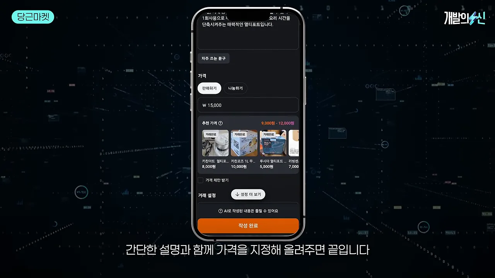
주문 알림이 오면 도매 사이트로 가요. 위쪽 알림이 '무선 이어폰 1개, 29,900원' 주문이고, 아래가 도매 사이트 주문 칸이에요. 도매가 18,500원 상품을 받는 사람 이름과 고객 주소로 넣고 결제 완료를 눌러요.
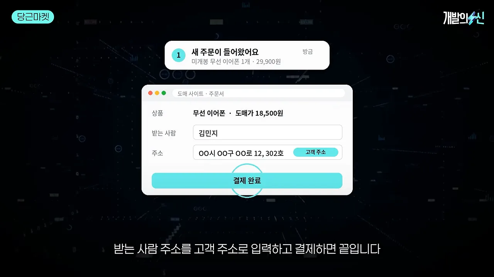
한 건 정산 카드를 보면 남는 돈이 나와요. 판매가 29,900원에서 도매가 18,500원을 빼고 포장·배송비 0원이니 11,400원이 남아요.
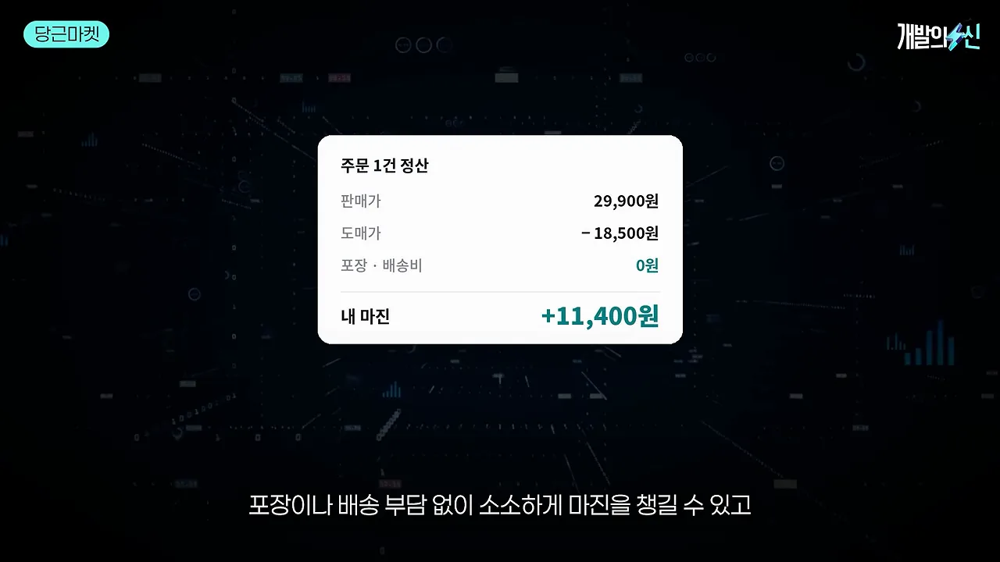
세금은 어떻게 해요
영상은 세금 걱정에 두 단계로 답해요. 화면 오른쪽 위 칸이 홈택스의 사업자 등록, 아래 칸이 5월 종합소득세 매출 신고예요. 이 둘이면 문제없다고 해요.
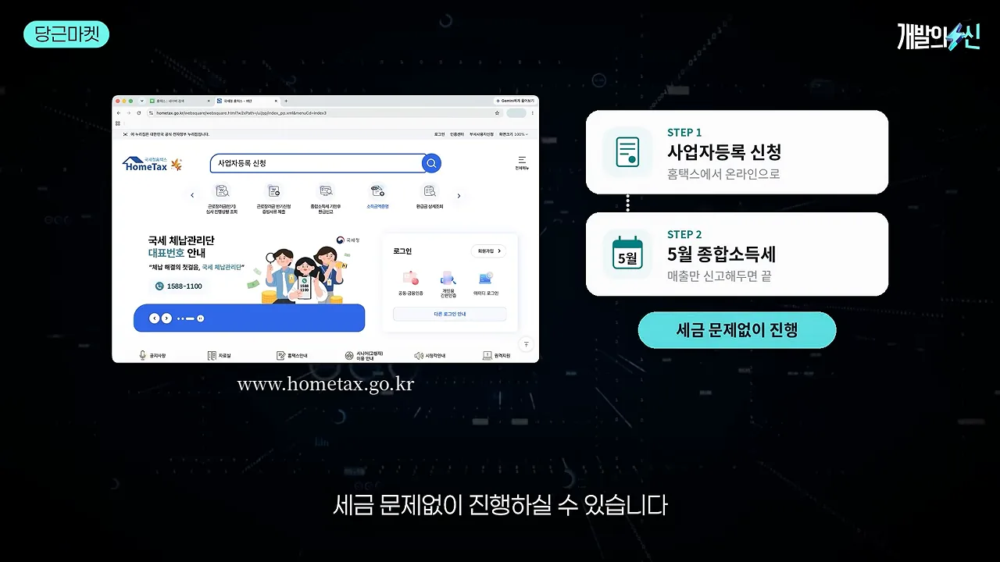
영상은 포장과 배송 부담이 없고 복잡한 컴퓨터 작업도 없어서, 시니어도 시작하기 쉬운 부업으로 꼽아요.
쇼핑 쇼츠는 얼굴 없이 만들 수 있어요
마지막 부업은 쇼핑 쇼츠예요. 유튜브나 인스타그램에서 생활 꿀템을 30초 안팎으로 소개하는 그 영상이에요. 돈이 들어오는 길은 다시 제휴 링크예요. 화면처럼 제품 영상 아래에 링크가 있고, 보던 사람이 누르고 사면 오른쪽 숫자처럼 수수료가 쌓여요.
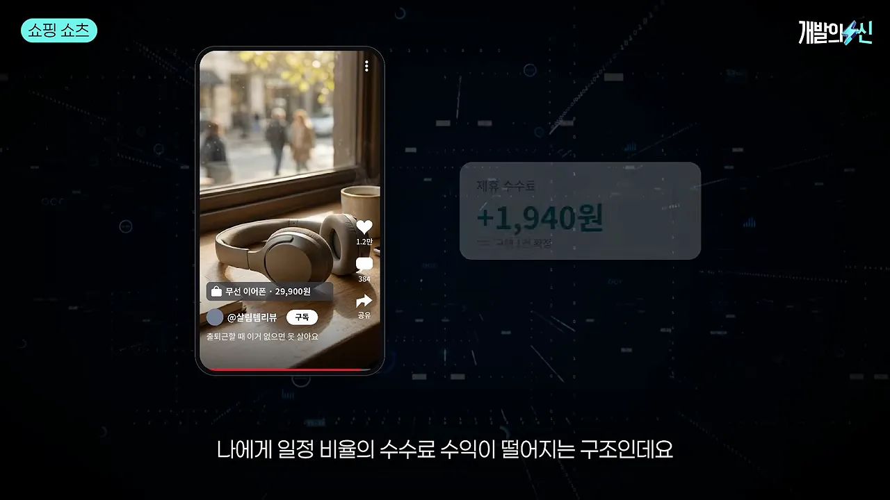
만드는 도구로는 캡컷을 꼽아요. 화면은 캡컷 편집 창이고, 아래 줄의 영상 칸에 제품 영상이 놓여 있어요. 제품 영상이나 이미지를 불러와서 자막과 목소리를 입히면 돼요.
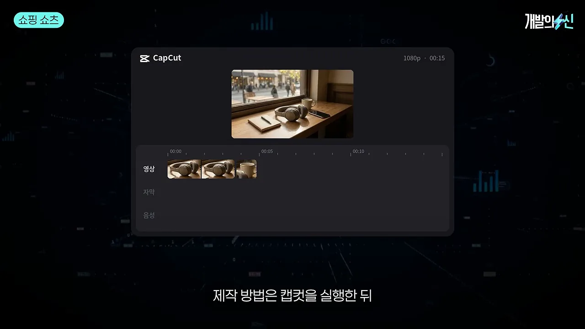
체크할 점이 하나 있어요. 캡컷의 일부 기능은 돈을 내야 써요. 화면의 두 칸, 음성 변환과 자동 자막에 유료 표시가 붙어 있어요.
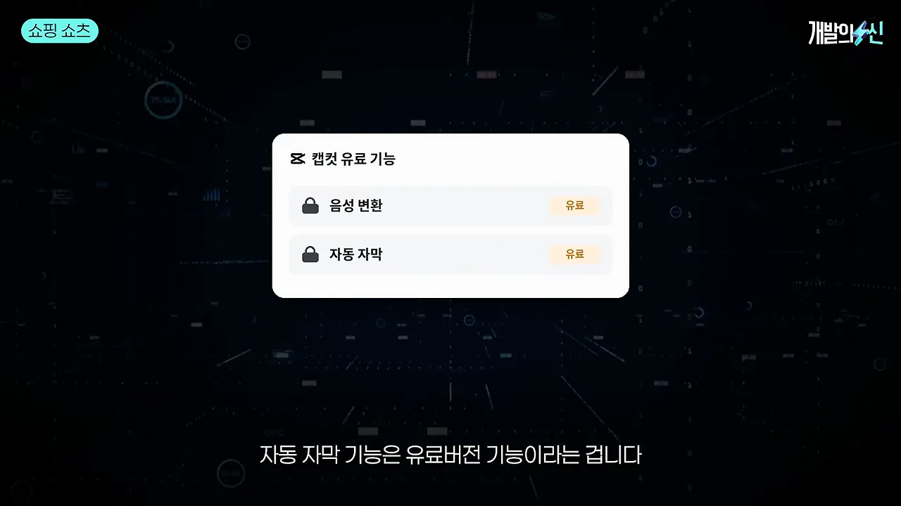
대안도 두 가지 알려 줘요. 왼쪽은 캡컷 안에서 무료 범위의 음성과 자막을 쓰는 방법, 오른쪽은 타입캐스트 같은 외부 AI 음성을 쓰는 방법이에요.
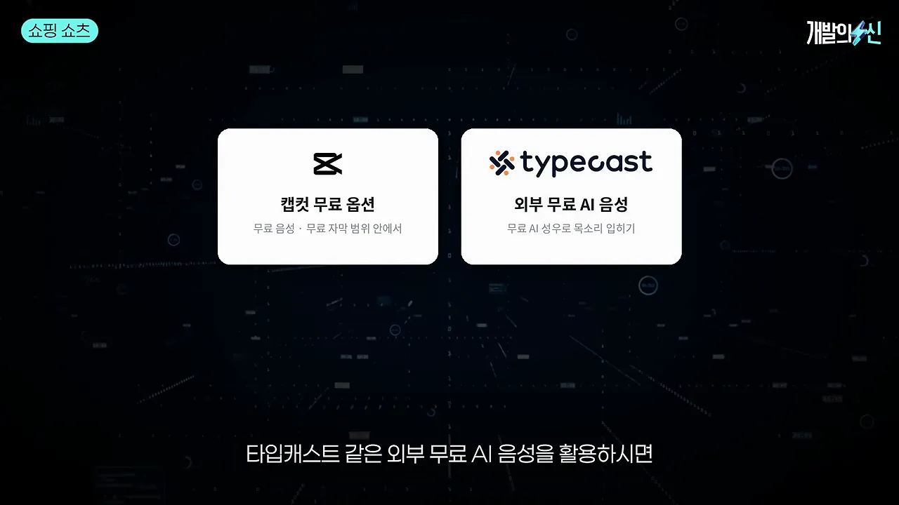
제휴 프로그램은 쿠팡 파트너스만 있는 게 아니에요. 영상은 알리익스프레스, 올리브영, 카카오 큐레이터를 함께 꼽아요. 매일 하나씩 꾸준히 올리면 어느 순간 조회수가 터지면서 수수료가 쌓인다고 해요. 다만 얼마나 걸리는지, 얼마가 쌓이는지 숫자로 보여 주지는 않아요.
영상이 결국 권하는 것
영상은 이 중에서 입맛에 맞는 걸 고르면 된다고 하면서, 이번에는 카카오톡 큐레이터를 추천해요. 수수료 9%를 줄 때 시작해 두라는 거예요. 앞서 본 대로 이 조건은 12월까지이고, 예산이 떨어지면 더 일찍 바뀔 수 있어요.